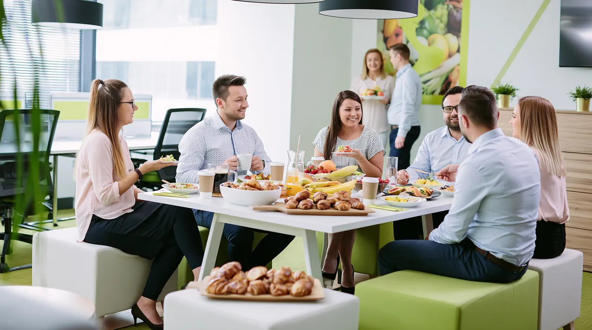
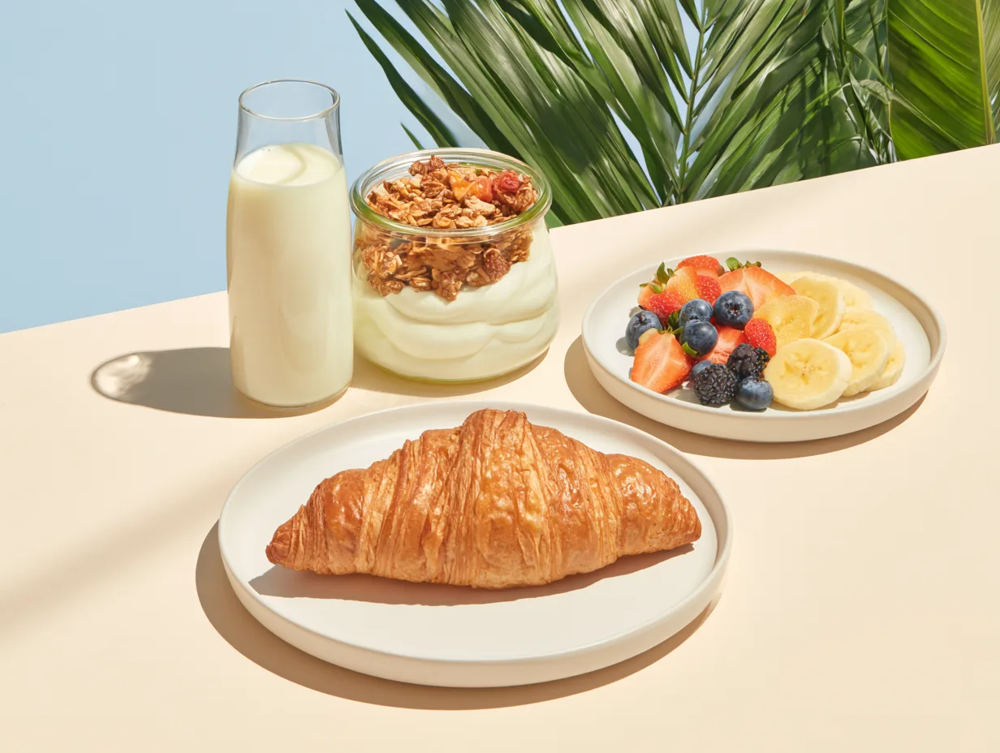

Badania naukowców z Cornell University i University of Chicago potwierdzają to, co wielu menedżerów intuicyjnie czuje - wspólne jedzenie pomaga budować relacje i ułatwia współpracę. Osoby, które razem jadły, szybciej dochodziły do porozumienia w trudnych negocjacjach biznesowych.
Wspólne śniadanie firmowe jednocześnie integruje zespół, zachęca do wizyty w biurze, buduje zdrowe nawyki żywieniowe i poprawia atmosferę w pracy.
Organizacja śniadania dla 25-30 osób nie musi być logistycznym wyzwaniem. W DailyFruits przygotowujemy gotowe pakiety śniadaniowe, które zawierają wszystko, czego potrzeba do przygotowania różnorodnego, zdrowego posiłku:
Śniadania firmowe sprawdzają się szczególnie w firmach, które chcą zachęcić pracowników do częstszych wizyt w biurze po okresie pracy zdalnej. To też doskonałe rozwiązanie na onboarding nowych osób, poniedziałkowe kick-offy lub cotygodniowe spotkania integracyjne.
Dietetycy są zgodni - śniadanie to fundament produktywnego dnia. Pracownicy, którzy pomijają poranek posiłek, zaczynają dzień z niższym poziomem energii i gorszą koncentracją aż do obiadu. Wspólne śniadanie w firmie eliminuje ten problem i jednocześnie tworzy przestrzeń do nieformalnej wymiany informacji.
Pakiety śniadaniowe DailyFruits są przeznaczone dla grup 25-30 osób i dostarczamy je bezpośrednio do biura. Wystarczy złożyć zapytanie, a przygotujemy ofertę dopasowaną do preferencji Twojego zespołu - w tym opcje wegańskie i bezglutenowe.
← Wróć do wszystkich artykułów